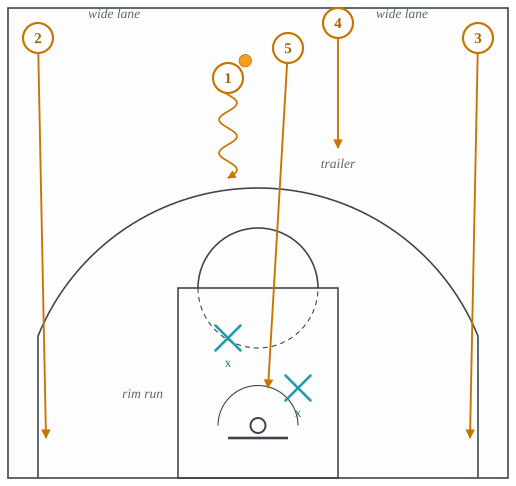
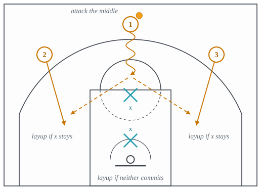
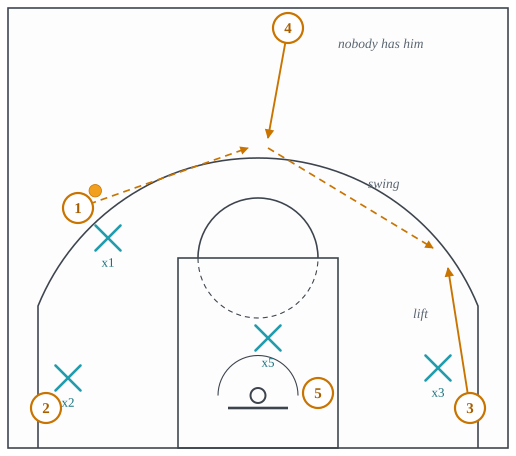

3.1: Transition Offense
Chapter 3: Offense
Transition is the right place to begin, for the same reason a possession begins there. Every possession starts with a change of possession, and for the first few seconds after it the defense is not a defense yet: it is five players running in the same direction, none of them where they will end up. Everything the half court teaches later is a way of manufacturing an advantage against a set defense. In transition the advantage is handed over for free, and the whole subject is how fast the offense can take it before it is withdrawn.
The size of the gift is measurable. In the college play-by-play data set behind Jordan Sperber’s analysis of tempo, “the average points per transition play is 1.04” and “the average points per half-court play is 0.87”, both from play-by-play since the 2010 season.1 Cleaning the Glass, whose definitions most public analysis now uses, treats the half court as “the least efficient of the contexts” for the plain reason that “the defense is set and in the best guarding position.”2 Nothing the offense can draw up in the half court is as good as arriving before that happens.
This lecture takes the break in the order it unfolds. Section 1 says what transition is and why it works. Section 2 covers the first three seconds: the rebound, the outlet, and the push. Section 3 gives the shape of the break, running the lanes and the rim run, and the read that decides a 3-on-2. Section 4 covers the trailer and the secondary break, where the break turns into early offense. Section 5 sets out the decisions a team has to make about transition before the game starts. Each action is written in a card with the same five slots, and each card’s last slot points at the coverage in lecture 4.1 that is built to stop it.
1 What transition is, and why it works
Transition is the part of a possession between the change of possession and the moment the defense is set. Cleaning the Glass defines it as “anything that occurs as the teams are switching sides of the court and all 5 defenders are not back and set in a normal guarding position.”3 The definition matters because it is about the defense, not the offense: a possession is in transition until the defense has ended it, however fast or slowly the offense is moving.
Three things are true of an unset defense, and each one is a separate advantage:
- There are fewer of them. Some defenders are still behind the play, so for a moment the offense has more players in the front court. This is the numbers advantage, and it is the most obvious of the three.
- Nobody has a man. Even when five defenders are back, they have not matched up. Two may be near one attacker and none near another. The offense does not need to be faster than the defense, only faster than the defense’s communication.
- There is no rim protector home. The big is usually the last player back. Until he arrives, a drive meets nobody at the rim, and a rim runner arriving first has the paint to himself.
The fast break is the attempt to score on the first of these before the other two are fixed. Early offense, taught in lecture 3.2, is the attempt to score on the second and third after the first has gone. The line between them is where the numbers even out.
2 The first three seconds
A break is won or lost before the ball crosses half court, and mostly before it has been dribbled at all.
The outlet
The outlet pass is the first pass after a defensive rebound, from the rebounder to a guard who has moved to the sideline at about the free-throw line extended. Its job is to take the ball out of the crowd under the rim and put it in the hands of a player facing the other basket. A rebounder who lands, turns and throws the outlet in one motion starts the break a full second before one who lands, looks and then throws, and a full second is the difference between a 3-on-2 and a 3-on-3.
The outlet has a target and a rule. The target is the sideline, not the middle: a guard waiting in the middle of the floor is surrounded, and a guard on the sideline has the whole floor on one side of him. The rule is that the outlet man must come to the ball, not wait for it. A pass thrown to a stationary player is a pass the defense can read.
The push
Push means advancing the ball at speed on every change of possession, by pass first and by dribble second. The order matters. A hit-ahead pass moves the ball forty feet in under a second; the fastest player alive covers that distance in two. A team that pushes with the pass makes the defense sprint to a spot the ball has already left.
The push after a made basket is where teams differ most, because it is where it costs the most effort. After a miss everyone runs; after a make the inbounder has to take the ball out of the net and the natural pace is a walk. Teams that push after makes are buying two things: a defense that never gets to jog back, and a fourth quarter in which the other team’s legs are gone. Pace is the measure of how much a team does this, and it is discussed in Section 5.
- Setup
- A defensive rebound. The outlet man has already moved to the sideline at the free-throw line extended; the wings have already turned to run.
- Trigger
- The rebounder’s feet touch the floor.
- Read
- Is the outlet man open on the sideline? If yes, throw it. If not, one dribble out of the crowd and look ahead for a hit-ahead.
- Payoff
- The ball in the front court with the defense still turning around.
- Beaten by
- Jamming the rebounder: pressure on the rebounder as he lands and a body on the outlet man, so the first pass is late or never thrown.
3 The shape of the break
Once the ball is moving, the break has a shape, and the shape is the same in every system because it comes from the geometry of the floor rather than from any coach.
Running the lanes
The two wings sprint the sidelines, as wide as the floor allows, all the way to the corners if nobody stops them. This is running the lanes, and the point of running wide is not to get the ball. It is to make the retreating defense choose. A defender sprinting back has one instinct, which is to run to the paint, and running the lanes wide means that every defender who follows that instinct has left a shooter alone on the sideline. The wings are not decoys; they are the reason the defense cannot be in two places.
The big runs the middle, straight down the lane line to the rim. This is the rim run, and it is the fastest way to put the third advantage from Section 1 to use. If the big arrives at the rim before a defender does, the ball-handler has a lob or a dump-off; if a defender goes with him, that defender is not on the ball, and the handler has the paint. Either way the rim run forces the first defender back to make the decision the offense wants him to make.
The fifth player is the trailer, who arrives last and is the subject of Section 4. Figure 1 shows all five.

- Setup
- Change of possession. Wings on the sidelines, big in the middle, ball in a guard’s hands.
- Trigger
- The outlet or the hit-ahead.
- Read
- Where does the first defender back go? If to the paint, the wing he left is open; if to a wing, the rim runner is open.
- Payoff
- A layup for the rim runner, or a corner three for the wing the defense abandoned.
- Beaten by
- Protecting the rim first with two defenders in the paint before the ball reaches the free-throw line, and closing out to the corners from the inside.
The numbers break
When the offense reaches the front court with more players than the defense, it has a numbers advantage, and the way to use it is the same at every level of the game. The ball goes to the middle of the floor and stays there until a defender commits to it. The ball-handler does not decide in advance whom to pass to; he dribbles at the free-throw line and lets the defense choose for him. A defender who steps up to the ball has left a wing open. A defender who stays home on a wing has left the ball-handler a lane to the rim. The handler’s only job is to keep his eyes up and go where the defense is not (Figure 2).

Two rules turn a numbers advantage into points instead of a turnover. First, the ball stays in the middle; a ball-handler who drifts to one side has cut the floor in half and turned a 3-on-2 into a 2-on-2 with a spectator. Second, the wings stay wide until the last moment and then cut to the rim at an angle, so that the pass they receive is a pass they can finish without dribbling. A wing who comes toward the ball to help has brought his defender with him.
- Setup
- More attackers than defenders in the front court: 3-on-2, 2-on-1, 4-on-3.
- Trigger
- The ball reaches the middle of the floor with a wing on each side.
- Read
- Which defender commits to the ball? Pass to the wing he left. If nobody commits, keep going to the rim.
- Payoff
- A layup, or a free throw on the foul that stops it.
- Beaten by
- Tandem defense: two defenders in a line rather than side by side, so the front man takes the ball and the back man takes the first pass, and the middle is never open.
Finishing, and not finishing
The break is over when it produces a shot or when the defense is set, and a good break is as much about the second as the first. The shots a break is for are the layup and the corner three, and a break that does not produce one of those in the first seconds should not be forced into a worse shot. It should flow, without stopping, into Section 4. The mistake to watch for is the contested pull-up from the elbow with three defenders back: it uses up the transition possession and gets the half-court shot anyway.
The transition three deserves a word of its own, because it is the shot the geometry of Section 3 sets up and the shot a retreating defense concedes first. A defender sprinting to the paint has, for a beat, left the arc. A wing who runs to his spot and stops, rather than continuing to the rim, is open for that beat. Whether a team takes that shot is a decision about its shooters, and it is one of the decisions in Section 5.
4 The trailer and the secondary break
Suppose the defense has done its job: two defenders back in the paint, the wings picked up, the rim runner met at the block. The first four attackers are matched. The fifth is not, because he has not arrived yet. He is the trailer, usually the other big, and he comes up the middle of the floor after the play. Nobody has him, because the defender who should have him is the last man back and is still behind him (Figure 3).

What the trailer does with the ball is the start of the secondary break: a scripted continuation that flows out of the primary break without a pause. The three things a trailer can do are the three things a big at the top of the floor can always do. He can shoot, if he is a shooter. He can reverse the ball to the weak side, which is a trailer flip and which moves the ball to the side the defense loaded away from. Or he can step straight into a ball screen for the guard, which is the drag screen, and which is the first action of lecture 3.2. The secondary break is where transition becomes early offense, and the seam between the two lectures is a big man arriving at the top of the key.
- Setup
- The primary break has been stopped. Four attackers matched; the trailing big still coming.
- Trigger
- The trailer crosses the arc at the top.
- Read
- Is anyone on him? If not, he catches and shoots or swings. If his defender has sprinted back, he screens the ball instead.
- Payoff
- A trailer three, a reversed ball against a loaded defense, or a drag screen before the big has settled.
- Beaten by
- The opposing big sprinting back with the trailer rather than settling in the paint, so the trailer arrives guarded. See cross-match in lecture 4.1 for how the defense buys time when he cannot.
5 Decisions a team makes before the game
The actions above are common to every team. What differs between teams is a small number of decisions about transition that a coaching staff makes once, in preseason, and then holds to.
Crash or get back. On every shot the offense takes, each player either goes to the offensive glass or retreats. Sending players to the glass wins offensive rebounds; sending them back stops the other team’s break. This is crash or get back, and it is a trade with no free answer. Most teams designate a floor balance rule, one or two players who are always back, and let the rest crash. The rule changes with who is on the floor and with who the opponent is.
Whether to leak. A leak out is a player leaving before the rebound is won, to get behind the defense for a long pass. When it works it is a layup with no defender within thirty feet. When it fails, the offense has lost a rebounder and, if the other team keeps the ball, the defense has lost a defender. Teams that leak do it with a designated player against a designated shooter, not as a habit.
The transition three. Whether the wings stop at the arc or continue to the rim is a decision about the roster. A team of shooters runs to spots; a team of finishers runs to the rim. The wrong rule for the personnel turns the best shot in the game into an average one.
How hard to push. Pace is the number of possessions a team plays per game, and a team chooses its pace by how hard it pushes, above all after makes. More possessions favors the better team, since more trials means less variance in the result, and shifts more of the game’s shots into the context where efficiency is highest.
Gap. This section should carry the league’s pace by season, so that “teams play faster than they did” is a number and not a feeling. The source is the Pace column on Basketball-Reference’s league averages page (link), which refuses automated retrieval (HTTP 403 on 2026-09-17). The values need to be read off the page by hand and entered here with the retrieval date.
6 How transition is counted
Because transition is defined by the state of the defense and not by the clock, it cannot be read off a box score, and the public numbers come from play-by-play tagging. Cleaning the Glass’s rule is that transition starts at the beginning of a possession and ends once the defense is set,4 and its measure of a team’s transition offense is the points per possession of possessions that began in transition, compared against what an average team does on a possession that did not. Sperber’s 1.04 and 0.87 are points per play rather than per possession, a distinction that matters when a possession contains an offensive rebound and therefore more than one play.5 Both are ways of saying the same thing, and both are the reason a coach who cannot make his team faster will at least try to make it earlier.
The idea to carry forward is that every advantage in this lecture is a deadline. The numbers advantage lasts until the defense gets back. The unmatched trailer lasts until his man arrives. The empty rim lasts until the big is home. The whole of transition defense, lecture 4.1, is the attempt to make those deadlines arrive sooner, and it is taught in the same order the offense attacks them: rim first, then the ball, then the match-ups. Before that, though, the offense has one more chance to use the deadline: the next lecture, 3.2, is about what it does in the seconds after the break has been stopped and before the defense is set.
Footnotes
Jordan Sperber, “Should offenses play faster?”, Hoop Vision, 15 January 2020, https://hoopvision.substack.com/p/should-offenses-play-faster, retrieved 2026-09-17. Verbatim: “The average points per transition play is 1.04” and “The average points per half-court play is 0.87”, stated under the heading “Since the 2010 season”. The text does not name the league. The programs it names, Wisconsin, Davidson, Illinois and Cal State Bakersfield among them, with a WAC title and an NIT Final Four, are Division I men’s college teams, so these are college figures, used here for the shape of the effect and not as an NBA number. Saved as
sperber-2020-play-fasterin the source registry, 2026-09-21.↩︎Cleaning the Glass, “League: Play Context” stats guide, https://cleaningtheglass.com/stats/guide/league_context, retrieved 2026-09-17. Verbatim: transition is “Anything that occurs as the teams are switching sides of the court and all 5 defenders are not back and set in a normal guarding position”; the half court is “the least efficient of the contexts” because “the defense is set and in the best guarding position.” The page gives no numbers. Saved as
ctg-guide-league-contextin the source registry, 2026-09-21.↩︎Cleaning the Glass, “League: Play Context” stats guide, https://cleaningtheglass.com/stats/guide/league_context, retrieved 2026-09-17. Verbatim: transition is “Anything that occurs as the teams are switching sides of the court and all 5 defenders are not back and set in a normal guarding position”; the half court is “the least efficient of the contexts” because “the defense is set and in the best guarding position.” The page gives no numbers. Saved as
ctg-guide-league-contextin the source registry, 2026-09-21.↩︎Cleaning the Glass, “League: Play Context” stats guide, https://cleaningtheglass.com/stats/guide/league_context, retrieved 2026-09-17. Verbatim: transition is “Anything that occurs as the teams are switching sides of the court and all 5 defenders are not back and set in a normal guarding position”; the half court is “the least efficient of the contexts” because “the defense is set and in the best guarding position.” The page gives no numbers. Saved as
ctg-guide-league-contextin the source registry, 2026-09-21.↩︎Jordan Sperber, “Should offenses play faster?”, Hoop Vision, 15 January 2020, https://hoopvision.substack.com/p/should-offenses-play-faster, retrieved 2026-09-17. Verbatim: “The average points per transition play is 1.04” and “The average points per half-court play is 0.87”, stated under the heading “Since the 2010 season”. The text does not name the league. The programs it names, Wisconsin, Davidson, Illinois and Cal State Bakersfield among them, with a WAC title and an NIT Final Four, are Division I men’s college teams, so these are college figures, used here for the shape of the effect and not as an NBA number. Saved as
sperber-2020-play-fasterin the source registry, 2026-09-21.↩︎